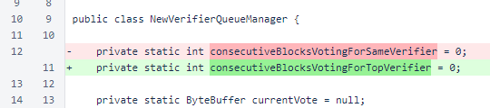
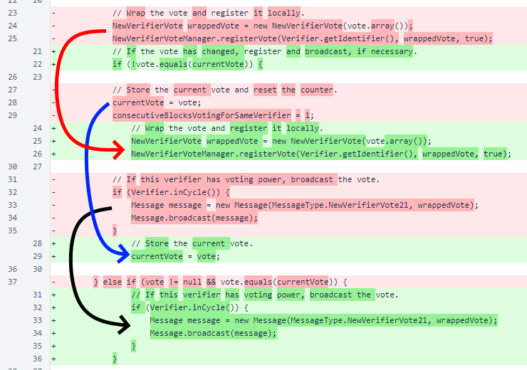
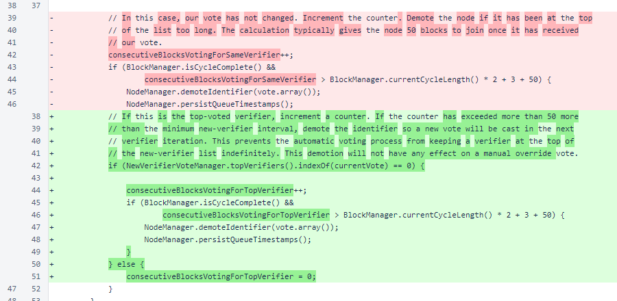

Nyzo version 477 (commit on GitHub) modifies NewVerifierQueueManager to continue voting for a verifier until it becomes the top-voted verifier.
In NewVerifierQueueManager, the consecutiveBlocksVotingForSameVerifier field was renamed to consecutiveBlocksVotingForTopVerifier to reflect its new use.
In NewVerifierQueueManager.updateVote(), the outer condition now only checks if the vote is null. Some of the inner logic must be performed even if the vote is unchanged.

If the vote has changed, the new vote is registered, stored, and broadcast. With the exception of removal of an assignment of consecutiveBlocksVotingForSameVerifier and different nesting of conditions, this code is unchanged.
If the current vote is for the top-voted new verifier, the consecutiveBlocksVotingForTopVerifier counter is incremented. If this verifier is voting for the top-voted new verifier for too long, that verifier is demoted to give another verifier a chance to join.
